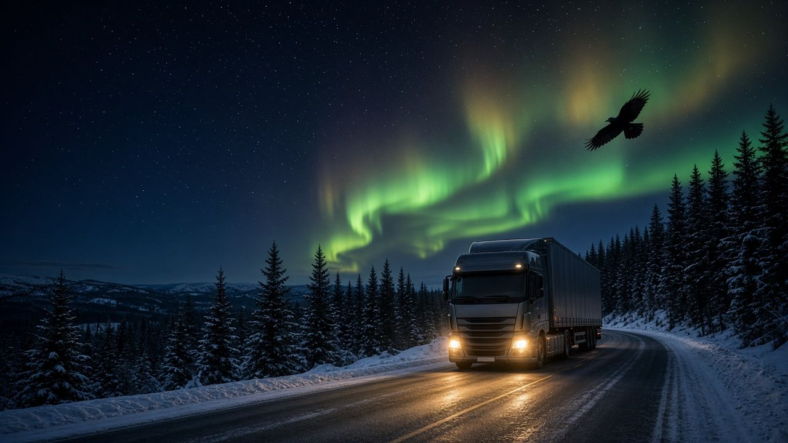
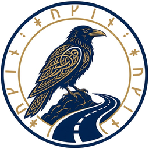
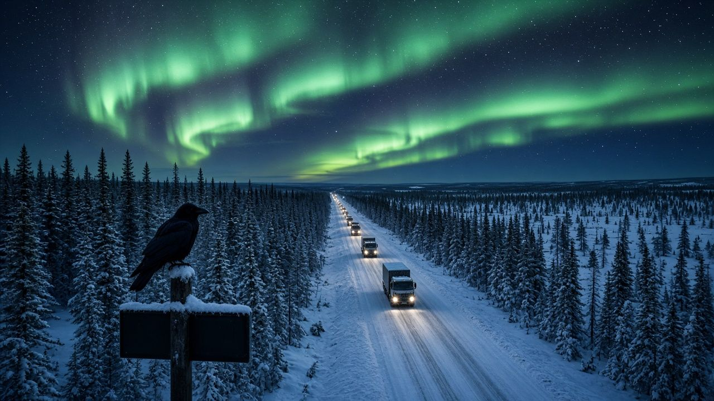

Trafikledning för åkerier och transportföretag
Baserad i Uppsala – uppdrag på distans i hela Sverige
Vi hjälper dig
på vägen
Huginn Trafikledning erbjuder konsulttjänster inom vägtrafik och trafikledning för lastbilstransporter. Vi hjälper er att planera, samordna och hålla överblick – så att bilar, förare och uppdrag hänger ihop.

Tjänster
Det här kan vi hjälpa er med
Från enstaka insatser till löpande stöd. Vi anpassar upplägget efter er verksamhet, era fordon och era uppdrag.
-
Trafikledning och planering
Planering och samordning av lastbilstransporter i det dagliga arbetet – fördelning av uppdrag, fordon och förare så att flödet håller.
-
Ruttoptimering
Genomgång och planering av rutter med målet att minska tomkörning, väntetider och onödiga kilometer.
-
Inhyrd trafikledare
Bemanning av trafikledning när ni behöver förstärkning – vid arbetstoppar, semestrar, frånvaro eller under en övergångsperiod.
-
Kör- och vilotider
Stöd i planeringen så att kör- och vilotidsreglerna finns med från början, och hjälp att skapa ordning och rutiner kring regelefterlevnad.
-
Uppstart av trafikledning
För er som ska bygga upp en trafikledningsfunktion: arbetssätt, rutiner, planeringsstruktur och tydlig kommunikation med förarna.
-
Effektivisering
Genomlysning av befintlig trafikledning med konkreta förslag på förbättringar i planering, flöden och informationsöverföring.
Namnet
Varför Huginn?
I nordisk mytologi är Huginn en av Odens två korpar – namnet betyder tanke. Varje dag flyger Huginn ut över världen och berättar för Oden vad som händer.
Det är precis vad god trafikledning handlar om: överblick, koll på vägarna och rätt beslut i tid.
Runorna i ringen runt korpen stavar HUGINN med den yngre futharken.
-
Överblick
Vi ser helheten – fordon, förare, uppdrag och regler – och hjälper er att planera med framförhållning.
-
Snabb respons
I transportbranschen förändras läget hela tiden. Vi strävar efter att vara lätta att nå och snabba att agera.
-
Personlig kontakt
Ni har en och samma kontaktperson genom hela uppdraget – inga mellanhänder.
-
Anpassat efter er
Varje åkeri arbetar på sitt sätt. Upplägget formas efter era behov, inte tvärtom.

Om Huginn
En trafikledare vid er sida
Bakom Huginn Trafikledning står Ahmad Ali, som arbetar som konsult och trafikledare inom vägtrafik och lastbilstransporter.
Huginn är ett litet, personligt företag. När du kontaktar oss är det Ali du pratar med – från första samtalet till genomfört uppdrag. Huginn är baserat i Uppsala och tar uppdrag på distans i hela Sverige. Målet är enkelt: att göra vardagen i trafikledningen tydligare och smidigare för åkerier och transportföretag.
Vi hjälper dig på vägen.

Som korpen över vägen – överblick, även när vägen är lång.
Kontakt
Berätta om ert behov
Skicka ett mejl och berätta kort om er verksamhet och vad ni behöver hjälp med, så återkommer vi för att prata vidare om ett upplägg.
Baserad i Uppsala – uppdrag på distans i hela Sverige.
Skicka e-postE-postadress: huginntrafikledning@gmail.com
Hör av er
Ett kort mejl om er verksamhet och vad ni behöver.
Vi går igenom behovet
Tillsammans reder vi ut vad som ska lösas och hur.
Upplägg och start
Ni får ett förslag på upplägg, och sedan sätter vi igång.